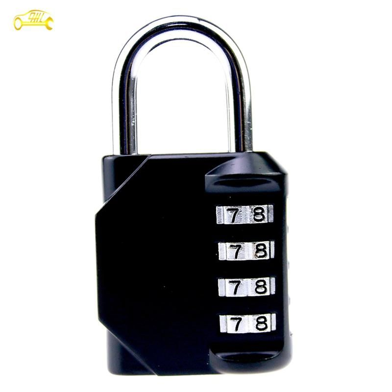

*## Logical
AND
Zero N bits out
All you need to do, is to and it with a 0000 0000 mask (for a one byte value in this example).
Check if an integer is even
Mask it with 0000 0001. Even numbers have 0 at the end, and uneven - 1. anding an even number with 0000 0001 will result in 0 and anding an uneven - with 1.
Bit map
AND operation will be used to check if the given bit in the bit map was set already: if bit_vector & (1 << char_code). 1 « char_code basically does the following (using 8 bit value for simplicity). Say, we checking if either of the numbers appeared more than once in some data (numbers from 0 to 7).
| 7 | 6 | 5 | 4 | 3 | 2 | 1 | 0 | Possible numbers |
|---|---|---|---|---|---|---|---|---|
| 0 | 0 | 0 | 0 | 0 | 0 | 0 | 0 | Bitmap, initial state, all bits are set to False. |
| 0 | 0 | 0 | 0 | 0 | 0 | 0 | 1 | True or False bool value (basically, 1 or 0 bit). If we see 7, we need to shift that 1 bit to the left 7 times, so, 1 « 7 gives us this: |
| 1 | 0 | 0 | 0 | 0 | 0 | 0 | 0 | Now, we have a mask that sets the 7th bit to True (1). |
Then, we need to apply this mask. Masks are usually applied with AND.
| 0 | 0 | 0 | 0 | 0 | 0 | 0 | 0 | Bit map (initial state, all bits set to 0) |
|---|---|---|---|---|---|---|---|---|
| 1 | 0 | 0 | 0 | 0 | 0 | 0 | 0 | We take our mask with the 7th bit set and perform a bitwise OR operation with the bit map to set this bit. And get: |
| 1 | 0 | 0 | 0 | 0 | 0 | 0 | 0 | this. All bits 0 except for the 7th. |
Let’s assume that we have also encountered number 4 and we want to add it to the bitmap.
| 1 | 0 | 0 | 0 | 0 | 0 | 0 | 0 | BitMap (7th bit has already been set) |
|---|---|---|---|---|---|---|---|---|
| 0 | 0 | 0 | 1 | 0 | 0 | 0 | 0 | We see 4, we create a mask for a 4 by shifting 1 4 positions to the left with the shift operation: 1 << 4 to get the value to the left. |
Let’s now apply the mask:
| 1 | 0 | 0 | 0 | 0 | 0 | 0 | 0 | BitMap (7th bit has already been set) |
|---|---|---|---|---|---|---|---|---|
| 0 | 0 | 0 | 1 | 0 | 0 | 0 | 0 | Using the OR operation, let’s set the 4 bit. |
| 1 | 0 | 0 | 1 | 0 | 0 | 0 | 0 | Now, two bits are set. |
How do we check now, that the bit is set? With the AND, of course.
| 1 | 0 | 0 | 1 | 0 | 0 | 0 | 0 | Our bitmap now |
|---|---|---|---|---|---|---|---|---|
| 0 | 0 | 0 | 1 | 0 | 0 | 0 | 0 | Let’s say we are checkin if 4 is already in the bitmap (and we know it is). AND it with the bitmap to get… |
| 0 | 0 | 0 | 1 | 0 | 0 | 0 | 0 | …get the same result as your mask! Since at least 1 bit is set, it’s not 0 -> it’s a True. |
Check if EXACTLY one bit in the integer is set
new_int = integer - 1
new_int & integer
# if 0 - only 1 bit set
# if 1 - more than 1
OR
Set to 1 if either of the bits is 1. Repeat for each bit of the first operand and the second operand. Writes to the destination operand.
Interesting! 😮 Can be used to set all bits to 1 with 1111. For example, we have 1110 or 1111 = 1111. Basically, any value ored by 1111 is 1111.
NOT
XOR
Exclusive OR. 1 if the first operand’s bit is not equal to the second’s.
Set a value to 0 (efficient)
Interesting! 🤔 A quick way to set eax to 0. Operation’s xor eax, eax opcode is 33 C0 (2 bytes) while mov eax, 0 - opcode b8 00 00 00 00 which is 5 bytes (costy 💴 ).
Invert all the bits / substract
Also, an interesting observation to investigate further: If I mask any value with 1111 , I get an operation equal to substraction (unsigned):
1010 xor 1111 is 0101 (5 in decimal)
1011 xor 1111 is 0100 (4d)
1100 xor 1111 is 0011 (3d)
If I look closer, I see that all the bits are inverted 🤔.
Swap values
When you have two variable and you need to swap their values, you usually use a temp variable to store the first variable’s value. Something like the following:
a = 5
b = 7
tmp = a
a = b
b = tmp
Although the overhead is really small, there is a way to perform the same operation without the tmp variable. It’s because of the following two main characteristics of a XOR operation:
- 🐝 XOR 🐝 = 🤷🏼♀️ (nothing, 0)
- 🐝 XOR 🤷🏼♀️ = 🐝
Now look at the following code:
a = 5 # 🍇
b = 7 # 🐝
a ^= b #python XOR and assignment
b ^= a # 🍇
a ^= b # 🐝
Let’s say 5 is 🍇, 7 is 🐝 and 0 is 🤷🏼♀️. Now, minding the two characteristics of a XOR operation above, let’s see what’s happening to the contents of each of the variables.
Variable a. 🍇XOR 🐝
Variable b. (🍇XOR 🐝) XOR 🐝. We can get rid of the brackets since they don’t play any part in all this. We get 🍇XOR 🐝 XOR 🐝. Since any value XORed with itself results in 0 and any value XORed with 0 is itself, with the 🐝 XOR 🐝 all 🐝 cancel themselves and we are left with 🍇.
Lastly, variable a again. (🍇XOR 🐝)XOR (🍇XOR 🐝) XOR 🐝. Let’s remove the brackets as well here: 🍇XOR 🐝 XOR 🍇XOR 🐝 XOR 🐝. 2 x 🐝 cancel themselves, 2 x 🍇 cancel themselves, we are only left with 1 🐝.
So, now a is 🐝 and b is 🍇.
Find difference
Remeber, the two main characteristics of the XOR operation.
- 🐝 XOR 🐝 = 🤷🏼♀️ (nothing, 0)
- 🐝 XOR 🤷🏼♀️ = 🐝
Imagine a string: 🐝🍇🍏🫐🐞
And another string: 🐝🍇🍏🫐🐞🌺
How do we find this extra 🌺? We could, of course, use a hashmap, but that means the space complexity of our algorithm becomes O(n).
If we XOR all elements against each other from both of the strings, we will get something like this: 🐝 XOR 🍇 XOR 🍏 XOR 🫐 XOR 🐞 XOR 🐝 XOR 🍇 XOR 🍏 XOR 🫐 XOR 🐞 XOR 🌺. Since the order of a XOR operation does not matter, and almost all the emoji are in pairs, they cancel each other: 🐝 XOR 🐝 XOR 🍇 XOR 🍇 XOR 🍏 XOR 🍏 XOR 🫐 XOR 🫐 XOR 🐞 XOR 🐞 XOR 🌺. The only emoji without a pair is 🌺. Since all XORed pairs like 🐝 XOR 🐝 and 🍏 XOR 🍏 result in 🤷🏼♀️ (nothing, 0), in the end we will be left with 🤷🏼♀️ XOR 🌺. And as we know, 🤷🏼♀️ XOR 🌺 = 🌺.
If in the end of our XORes we get 0, we know that the strings are identical.
Of course, if the strings differ in more than one character - we won’t be able to use this trick. We could use a slighlty more complex approach for two different characters in one string, but not more. Besides, we need to be sure that both strings differ AT most in 1 character. For example, consider the following case: aa and ff.
Find two differences
ROR and ROL
x86
Affected flags: CF , OF
Rotate the integer n-time to the left or right. When you see such an instruction, very often it is an indication of encryption. To better understand both I need an example. Let’s take an 8-bit binary value. The initial state is:
0 1 0 0 1 1 1 0
See the 1 at the beginning of this number, second bit from the left (let’s call him Matt). We will then locate him after ROR and ROL.
Let’s now ROR (rotate bits right) by 1. Every bit is moved to the right by one position. Our first state (for future reference):
0 0 1 0 0 1 1 1
Where the hell is Matt now? Now, this bit is the third bit from the left.
Let’s now ROL (rotate bits left) by 1. Every bit is moved to the left by one position. Our second state:
1 0 0 1 1 1 0 0
Where the hell is Matt now? This bit is the first bit from the left, so, he’s become the most significant bit in this number 👑 .
Let’s now ROL the last number by 1 again. Every bit is again moved to the left. But Matt has nowhere to move! He’s falling nowhere…

Where the hell is Matt now? He seemed to have got drowned, but he managed it through the swamp and emerged… But now…Matt used to be the most significant bit 👑when in the second state , but now he’s just a 💩, the least significant bit. As you can see, he’s the first from the end.This is the third state:
0 0 1 1 1 0 0 1
Let’s make him worthy again and give him his newly acquired and recently lost regalia. Let’s ROR him by 1 again and get back to the second state (unforunately he’ll have to dive into the swamp again):
1 0 0 1 1 1 0 0
When moving from the second to the third state Matt has been in a swamp, or in a wormhole 🐛 if you prefer a space metaphor. Let me introduce our wormhole - CF flag. The spirit of Matt was printed on this flag. In other, less eloquent words, when falling from the edge into the swamp, his value (1) was copied into CF. So as any other bit that would “fall”. For example, if we get back to the third (and the most unfortunate for Matt) state (0 0 1 1 1 0 0 1). Matt’s spirit is still there, therefore CF is still 1. Let’s ROL this number by 1 once again, Martha (who’s now the most significant, i.e. the first bit of the number) falls into the swamp, gets copied into CF and emerges at the end as the least significant bit 💩, making Matt now the second least significant bit, i.e. the second bit from the end (which is not that bad now). Now we have the forth state:
0 1 1 1 0 0 1 0
and the CF = 0 now bearing Martha’s spirit.
The processor restricts the count to a number between 0 and 31 by masking all the bits in the count operand except the 5 least-significant bits.
RCR and RCL
x86
Affected flags: CF , OF
It’s pretty much the same, with just one small difference. CF flag is now taken into account, it’s not just a wormhole 🐛 anymore. Let’s consider the third state from the previous examples:
0 0 1 1 1 0 0 1
Let CF be 1 now (may be it was set by some preceding operation like ROL).
If we now RCL, the fourth state will be as follows:
CF = Martha = 0.
0 1 1 1 0 0 1 1
The value that was in CF is now at the end of our number (1), and it’s the most significant bit is now in CF. Everyone else has just shifted to the left by 1 bit. It’s as if we were operating not on a 8-bit value, but on a 9 bit value:
| MAIN value | CF |
|---|---|
0 1 1 1 0 0 1 1 |
0 |
which results in something like that: 0 1 1 1 0 0 1 1 0.
Let’s now RCR back to the third state. CF = 0, now it is moved to it’s place (most significant bit) 0 0 1 1 1 0 0 1 and since it was Matt (1) who’s falling from the cliff, CF = 1. Everyone else has just shifted to the right.
Another flag, which behaviour is quite peculiar, is OF. It only changes when we shift by 1. When we whift by 2 or more - nothing’s happening to it. After CPU’s performed the rotates, it calculated OF like this. For left rotates (RCL and ROL), the OF = CF XOR the most-significant bit. For right rotates, the OF = most-significant-bit-1 XOR most-significant-bit-2. For the example above with RCL, when we enetered the fourth state:
CF = 0 and the number itself is 0 1 1 1 0 0 1 1.
OF = 0 XOR 0 = 0
For RCR operation leading us back to the third state: 0 0 1 1 1 0 0 1. Never mind CF since it’s not included in the calculations. The two most significant bits after rotation are 0 and 0 (the first two digits). OF = 0 XOR 0 = again 0.
SHL and SHR
x86
Affected flags: CF
Shifts bits by the value specified in second operand to the left or to the right. The last bit dropped off is written to CF “before death ☠️ “. Example:
1 0 1 0 1 1 0 1
Let’s SHR the above number: 0 1 0 1 0 1 1 0 .
Let’s now SHR once again: 0 0 1 0 1 0 1 1 .
The main rule here: for each SHR add a 0 at the beginning and remove one digit from the end. The same is for SHL: for each SHL add 0 to the end and remove one digit from the beginning.
Above number is 8 bit long. So we can pop 8 bits by shifting in one direction (SHR for example only). When the last digit is poped off its value is written to CF, in the example above it was 1, hence now CF = 1.
Useful tip
SHL can be used as an optimized multiplication and division by 2^n”. Here is an example:
| SHL | equivalent |
|---|---|
shl eax, 1 |
eax * 2 |
shl eax, 2 |
eax * 4 |
shl eax, 3 |
eax * 8 |
To read more about this and how this really works, read here.
ROL/ROR vs SHL/SHR
What’s the difference between the two (well, even four)? When I inspected my old notes, I’ve got a little confused because I’d totally forgotten that. Tha’ts why I’ve included this section for future, should my memory fail me once again.
The difference between the two is pretty much the same as the difference between “rolling” and “shifting”. Say, we have a password padlock for a suitcase and set our passcode to 1234.

Then we shuffle it and have 5432. How to open it then? We rotate each dial until we get to our passcode digits: the dial with 5 is rotated 4 times to get 1, the dial with 4 is rotated 6 times and etc. No one would expect that when we rotate a dial on the lock, it disapears after reaching the end. But that would be the case if the operation in the padlock’s intestines was shifting. And that what’s happening to the shifted bits when shifting:

So, in ROR/ROL instruction no bits are lost, all of the bits of the original number are preserved. They are just rolling like those numbers in the lock 🔒. But with SHL/SHR instruction the numbers are dimped into a 🐛 wormhole and never seen again. If we shift long enogh, we turn any number to a bunch of zeroes until the only footprint left would be a CF flag which will hold the last shifted and dropped off bit. But even this would be overwritten with 0 shoud you shift one last time…

References
Expand…
About XOR tricks
https://florian.github.io/xor-trick/
Educative Grokking Interview
https://www.educative.io/courses/grokking-coding-interview-patterns-python/RMkpmAllP9L